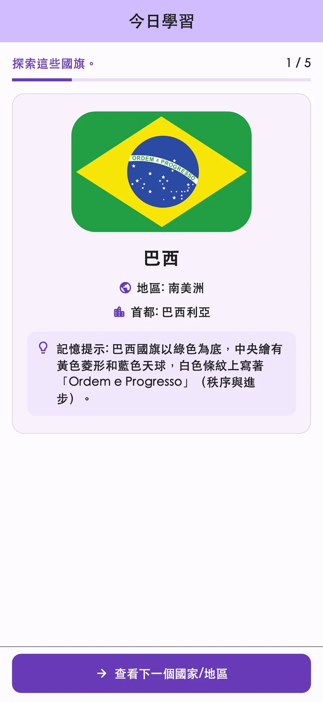
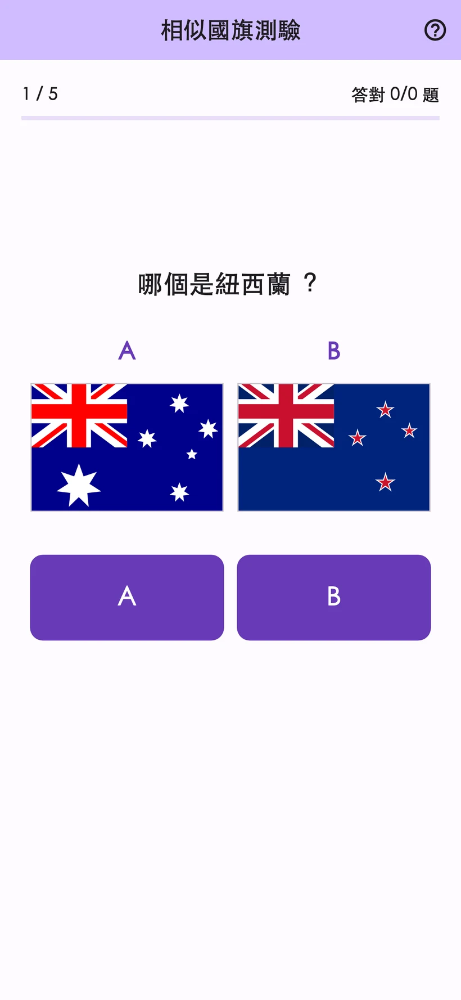
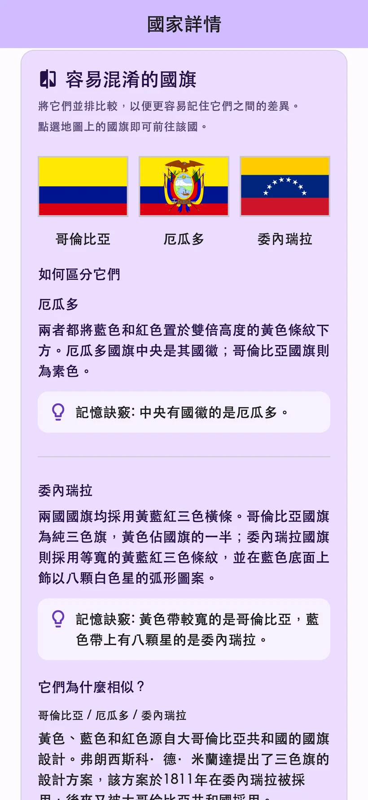
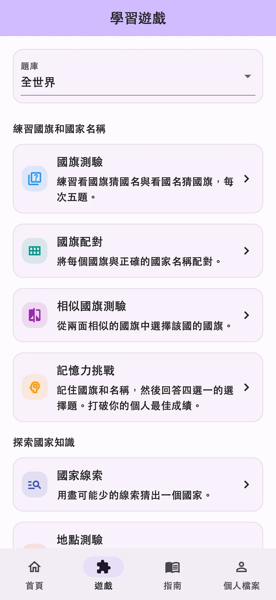

01
國旗四選一測驗
依國旗選國名，或依國名選國旗。


實際App畫面
逐一認識國旗與國名，再用測驗確認。複習內容會依照學習紀錄安排。
紀錄畫面使用範例資料。詳細學習分析可透過STUDY PLUS使用。
比較顏色與圖案，記住國旗的差異。先用法國與義大利的國旗試試看。
這是體驗國旗辨識的網頁例題，呈現方式與App不同。
從國旗與國名到名勝與鄰國，可以依照想學的主題選擇遊戲。
依國旗選國名，或依國名選國旗。
將國旗與正確的國名連起來。
從兩面相似的國旗中選出正確答案。
記住國旗與國名後回答選擇題。
根據陸續出現的線索猜出國家。
回答名勝或自然遺產所在的國家。
比較兩國的人口、面積等資料。
選出與指定國家有陸地邊界的鄰國。


206個國家與地區的國旗、首都、地圖、由來與文化。測驗裡遇到感興趣的國家，就能接著查閱。
分享出身國家或地區的文化與推薦。使用者貼文經翻譯與管理者審核後公開，可用支援的語言閱讀。
各國故事的暱稱為選填，並提供貼文檢舉與隱藏功能。YouTube影片會在App外開啟。
每日學習
觀看可用的獎勵影片廣告，可為所選項目增加當天3次使用額度。同一天再次查看相同國家，不會額外扣除額度。
不限次數且無廣告
自動續訂的月訂閱與年訂閱
符合資格者可免費試用月訂閱1個月。年訂閱不提供免費試用。
價格、免費試用資格、試用結束後的費用與續訂週期，請查看App內的購買畫面。
支援日文、英文、西班牙文、德文、韓文、泰文、印尼文、法文、巴西葡萄牙文，以及台灣繁體中文，共10種語言。
「今日學習」與一般複習免費。每天可查看3個不同國家的詳細資料，遊戲分頁合計可玩3次。觀看可用的獎勵影片廣告，可為所選項目增加當天3次使用額度。
符合資格者可免費試用月訂閱1個月。年訂閱不提供免費試用。費用與資格條件，請查看App內的購買畫面。
不需要註冊或登入。可以直接從App傳送國家故事與意見。
學習紀錄儲存在裝置內，不會自動同步到其他裝置。回復購買項目與移轉學習紀錄是不同的功能。
對國旗與地理有興趣的人，都能依自己的步調學習。App提供廣告、選購項目、貼文功能與外部連結。年幼兒童使用時，請由家長陪同確認。
同意發文規則、翻譯與公開後送出，貼文會經翻譯與管理者審核後公開。暱稱為選填，並可刪除、檢舉或隱藏貼文。
在App中體驗每日學習與8種遊戲。
iPhone・Android／免費下載・提供App內購買